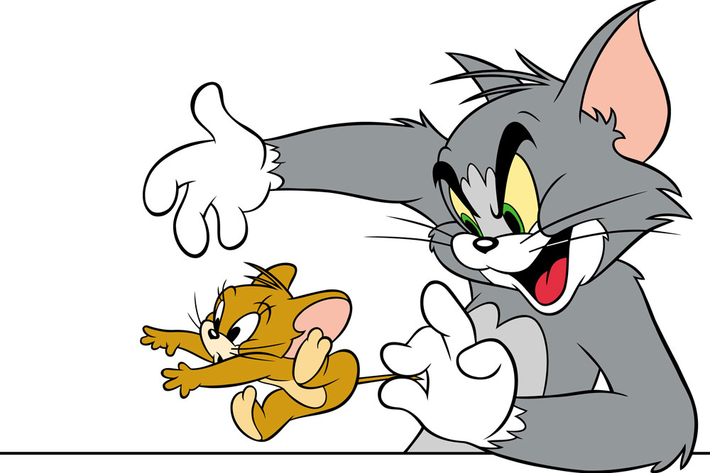
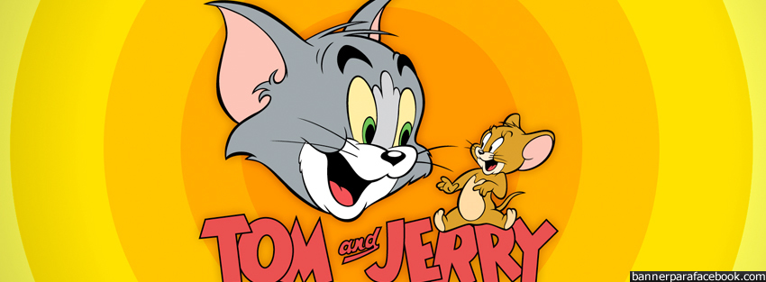

TOM & JERRY
Filmlerde müzikler çok önemli bir unsurdur. Çünkü diyaloglar yer almadığından verilmek istenen mesaj görsel ve işitsel olarak anlatılması gerekir. Bu yüzden filmlerde heyecanı ve duyguyu daha iyi ifade etmek amaçlı geleneksel fon müzikleri kullanılır. Filmlerde kahkaha, feryat veya soluk alıp verme gibi efektler klakson veya diğer müzik enstrümanlar kullanılır. Bunun yanında Tom'un sevgilisine söylediği, karakterlerin neşeli olduklarında mırıldandıkları şarkılar vardır bunlarda genelde MGM'ye ait filmlerden alınır. Genelde pop, caz ve klasik müzikten oluş
Filmlerde müzikler çok önemli bir unsurdur. Çünkü diyaloglar yer almadığından verilmek istenen mesaj görsel ve işitsel olarak anlatılması gerekir. Bu yüzden filmlerde heyecanı ve duyguyu daha iyi ifade etmek amaçlı geleneksel fon müzikleri kullanılır. Filmlerde kahkaha, feryat veya soluk alıp verme gibi efektler klakson veya diğer müzik enstrümanlar kullanılır. Bunun yanında Tom'un sevgilisine söylediği, karakterlerin neşeli olduklarında mırıldandıkları şarkılar vardır bunlarda genelde MGM'ye ait filmlerden alınır. Genelde pop, caz ve klasik müzikten oluşur


Anasayfa
Karakterler
Fotoğraflar
Copyright® 2013